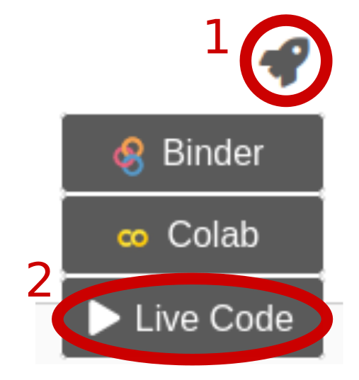

Introduction to python
Contents
Introduction to python¶
The practical part of the book builds on python examples.
Yes, python is a programming language and, yes, we will have to write code. But don’t be scared, python is friendly (mostly) and you don’t have to become a full stack software developer to do predictive modelling or any other scientific work in python.
People who have some experience with Matlab or R, usually find it rather easy to get started with python (and the transition is often happens to be persistent.)
Here we will have a quick python crash course and also see how python excercises in this jupyter book can be run interactively.
This below is a ‘code cell’, a place in the book where python code can be inserted.
Hello World¶
print('Hello Python World!')
Hello Python World!
You can run this cell yourself, by clicking at the rocket at the top of the page and the “Live Code”.
{kind=link}
Excercise 1.1
Modify the message from “Hello Python Word!” to “Hi there little snake!” and run your modified code with as ‘live code’.
While the ‘live code’ option can be useful to run small code snippets like this, it is often more useful to open a whole page in interactive mode by selecting ‘Binder’ or ‘Colab’ (faster, powered by Google) after clicking the rocket icon. Most of the exercises in this book will build on these solutions and wee will hage a closer look on the next page.
Of course, these cloud-interpreters (i.e. running code in your browser) are not the only way of using python. You can set up your own python environment on your local computer. You will find tons of very useful tutorials on the internet. All exercises in this book can be also run locally, after installing the all the package requirements for this book. But what are package requirements? Go to the next page to find it out.